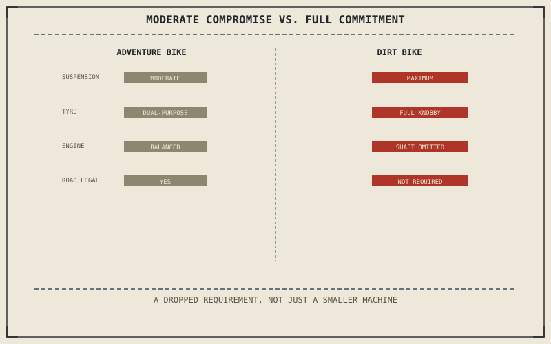

Chapter 14.5 covered a category that sits at a moderate point on several trade curves at once, capable across a wide range of surfaces without excelling at any pavement or off-road extreme. A dirt bike abandons that moderation entirely, giving up pavement capability as a requirement altogether rather than compromising toward it — a genuinely different decision, not just a lighter version of the same bike.
Chapter 14.5 closed by pointing to exactly this: a category committing fully to off-road terrain, with no pavement concession at all. This chapter is that full commitment.
Weight Over Everything: The Single-Cylinder Choice
Chapter 2.17 established that a single-cylinder engine's primary imbalance typically needs a balance shaft to run smoothly, and a dirt bike overwhelmingly chooses a single cylinder anyway, specifically for its light weight and mechanical simplicity. Many purpose-built off-road-only models go further still, minimizing or omitting the balance shaft Chapter 2.17 described entirely — accepting more vibration as an honest trade for the shaft's own mass, since low overall weight matters more to off-road handling than smoothness does on a machine that was never going to spend an hour at sustained highway RPM anyway.
Suspension and Tyres Pushed Past Adventure's Moderate Point
Chapter 5.5 already used an adventure bike's generous travel as its leading example, and a dedicated dirt bike pushes that travel further still, unconstrained by Chapter 14.4's touring luggage or Chapter 14.5's need to also behave reasonably on pavement. Its tyres sit at the far extreme of Chapter 6.6's tread-groove trade curve — fully knobbed, with essentially no on-road grip retained at all — because unlike Chapter 14.5's dual-purpose compromise, there's no pavement use case left to protect.
A dirt bike isn't simply a lighter adventure bike. It's what happens when road legality is dropped as a requirement entirely rather than moderated toward — every trade curve this part has described gets pushed to its off-road extreme, with nothing held back for a surface the bike was never built to cross.

A diagram contrasting an adventure bike's moderate position on suspension, tyre, and weight trade curves against a dirt bike pushed to the full off-road extreme on each, with road-legal equipment removed entirely.
What Gets Removed: Lights, Mirrors, a Passenger Seat
A genuinely off-road-only dirt bike typically isn't road-legal at all, unlike Chapter 14.5's dual-sport, which retains lights, mirrors, and turn signals specifically to keep that road legality intact. Dropping those requirements — along with passenger accommodation most dirt bikes never include — sheds real weight a road-legal machine can't, the same instinct behind Chapter 14.6's single-cylinder and minimal-balance-shaft choice, carried through to the entire machine rather than just the engine.
A Common Misconception, Cleared Up Early
It's a common assumption that a dirt bike is simply a smaller, lighter version of an adventure bike, positioned a little further along the same spectrum. This chapter has shown it as a different kind of decision entirely: Chapter 14.5's adventure bike moderates toward both surfaces at once, while a dirt bike drops pavement capability as a requirement altogether, freeing every other trade curve in this part to be pushed all the way to its off-road extreme.
Where This Leads
Chapter 14.7 turns to cafe racers and scramblers next, a category built around a genuinely different motive than the pavement-versus-terrain engineering this part has covered so far: retro style and identity.
Key Concepts to Remember
- A single-cylinder engine, sometimes with its balance shaft minimized or omitted, saves weight at the cost of smoothness this category doesn't need.
- Suspension travel and tyre knobbing push past an adventure bike's moderate point to the full off-road extreme, with no pavement grip retained.
- Dropping road legality as a requirement, rather than moderating toward it, is what actually separates a dirt bike from a smaller dual-sport.
Cross-References
| ← Ch. 2.17 | Established the balance shaft as a single cylinder's answer to primary imbalance; this chapter treats its omission as a weight-saving trade unique to off-road-only machines. |
| ← Ch. 5.5 | Established suspension travel as a workspace for rough terrain; this chapter treats a dirt bike as pushing that workspace further than an adventure bike's road-legal compromise allows. |
| ← Ch. 14.5 | Established an adventure bike's moderate position on multiple trade curves; this chapter contrasts a dirt bike's full commitment to the off-road extreme of each. |
| → Ch. 14.7 | Covers cafe racers and scramblers, built around retro style and identity. |